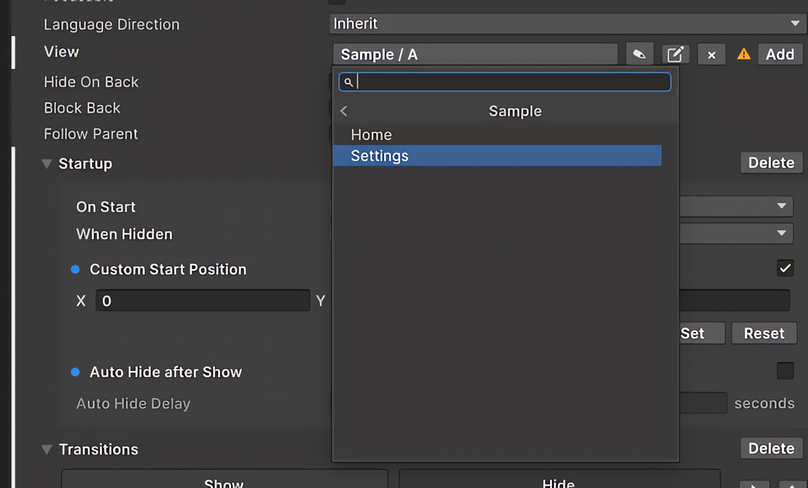

시작하기
이 예제에서는 Home → Settings로 이동하는 간단한 흐름을 만듭니다. UI 구성 → 주소 등록 → UI Builder 연결 → 그래프 연결 → Play 순서로 진행하면 됩니다.
1. UI 계층 구성
UXML 문서를 UI Builder에서 열고 화면 루트 두 개를 만듭니다.
- Home 화면의 루트는
NavElement로 구성합니다. - Settings 화면의 루트도
NavElement로 구성합니다. - Home 안에 Settings라는
NavButton을 넣습니다.
그래프의 UI Button 출력을 발생시킬 버튼은 기본 UI Toolkit Button이 아니라 NavButton을 사용해야 합니다. 기본 Button은 네비게이션 주소를 전달하지 않습니다.
두 NavElement는 같은 패널 루트 아래에 형제로 배치해도 됩니다. NavElement는 기본적으로 절대 위치를 사용하므로 그래프가 한 화면을 표시하고 다른 화면을 숨길 수 있습니다.
2. Key Catalog에 주소 등록
Tools > UI Navigation > Key Catalog를 열고 다음 항목을 추가합니다.
| 카탈로그 탭 | Category | Key | 사용처 |
|---|---|---|---|
| View | Demo |
Home |
Home NavElement와 그래프 View 명령 |
| View | Demo |
Settings |
Settings NavElement와 그래프 View 명령 |
| Button | Demo |
OpenSettings |
Home NavButton과 그래프 UI Button 출력 |
View와 Button 카탈로그는 분리되어 있습니다. 같은 문자열을 다른 탭에 등록하면 필요한 Picker에 표시되지 않습니다.
3. UI Builder에서 주소 연결
UI Builder에서 각 요소를 선택하고 Catalog Picker를 사용합니다. 각 Picker는 Category와 Key를 한 번에 저장합니다.
- Home의 View Picker에서
Demo / Home을 선택합니다. - Settings의 View Picker에서
Demo / Settings를 선택합니다. - Home
NavButton의 Signal Picker에서Demo / OpenSettings를 선택합니다. 이름은 Signal이지만 Button 카탈로그를 읽는 Picker입니다. - UXML 문서를 저장합니다.

결과 UXML은 다음과 같습니다.
<ui:UXML xmlns:ui="UnityEngine.UIElements"
xmlns:nav="NKStudio.UITKNavigation.Elements">
<nav:NavElement name="home"
view-category="Demo" view-key="Home">
<nav:NavButton name="open-settings" text="Settings"
signal-category="Demo" signal-key="OpenSettings" />
</nav:NavElement>
<nav:NavElement name="settings"
view-category="Demo" view-key="Settings" />
</ui:UXML>
UXML 속성 이름은 signal-key이지만, NavButton은 Button 카탈로그와 그래프의 UI Button 출력을 사용합니다. 별도의 Signal 카탈로그는 코드에서 UINavigationEvents.RequestSignal(...)로 발생시키는 신호용입니다.
4. Navigation Graph 연결
- Project 창에서 Assets > Create > UI Navigation > UI Navigation Graph를 선택합니다.
.uinavgraph에셋을 엽니다. 새 그래프에는Start → Home이 기본으로 생성됩니다.- Home UI 노드를 선택하고 On Enter UI에서
Demo/Home을 Show,Demo/Settings를 Hide로 추가합니다. - Home에서 + Add Output > UIButton을 선택한 뒤 Button 카탈로그의
Demo/OpenSettings를 지정합니다. 생성된 포트에는UI Button · Demo/OpenSettings가 표시됩니다. - 두 번째 UI 노드를 생성하고 이름을 Settings로 지정합니다.
- Settings의 On Enter UI에서
Demo/Settings를 Show,Demo/Home을 Hide로 추가합니다. - Home의
UI Button · Demo/OpenSettings출력을 Settings의 Enter 포트에 연결합니다. - Back으로 Home에 돌아가야 한다면 Settings의 Use Back을 활성화합니다.
- 그래프를 저장합니다. 저장할 때 Graph Toolkit 모델을 검증하고 런타임 에셋을 다시 컴파일합니다.

5. 런타임 연결
PanelRenderer,UIDocument또는 사용하는 Panel 연동을 통해 UXML이 Player Context Panel에 인스턴스화됐는지 확인합니다.- 활성 GameObject에
UINavigatorBehaviour를 하나 추가합니다. UINavigatorBehaviour의 Navigation Graph 필드에.uinavgraph에셋을 할당합니다.- 선택 사항: Escape, Backspace, 마우스 Back/Forward 입력을 사용하려면
UIBackInputRouter를 추가합니다.
활성 UINavigatorBehaviour는 하나만 사용할 수 있습니다. PanelRenderer와 같은 GameObject에 있을 필요는 없지만 UI 관련 Component를 함께 두면 관리하기 편합니다.
6. Play로 동작 확인
Play Mode에 진입하면 Home이 먼저 표시됩니다. Settings 버튼을 누르면 Demo/OpenSettings가 발생하고, 활성 Home 노드의 UI Button 출력이 이 주소를 찾아 Settings로 전환합니다. Settings에 Use Back을 켜고 UIBackInputRouter를 추가했다면 Escape 또는 마우스 Back 버튼으로 Home에 돌아갈 수 있습니다.
Tip
Picker에 주소가 보이지 않으면 Tools > UI Navigation > Key Catalog에서 View/Button 탭이 맞는지 먼저 확인하세요. UXML이나 그래프에 이미 존재하는 유효한 주소는 Scan Project로 가져올 수 있습니다.